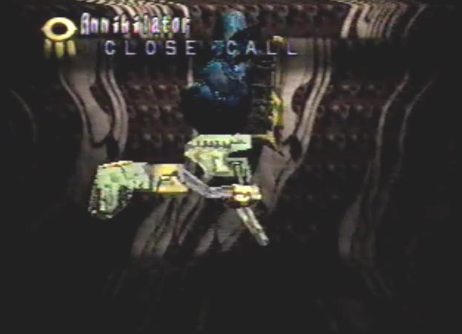
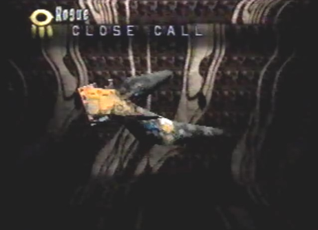
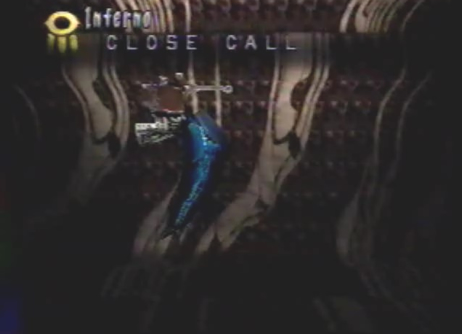

Craymen's
Fleet: Battle 1 |
Annihilator  |
Rogue  |
Inferno  |
Strategy Upon entering Uru Deep North, we were ambushed by Craymen's Fleet. First, the fleet sent an Annihilator ship to do battle with us. The dragon immediately changed into his Attack form, as we were going to need major fire power to take the ship out. The ship had a massive Reaper Cannon, that tracked our movements. As we attempted to evade the cannon, we could see that the ships weak spot lay directly in front of the Annihilator. The only problem was the constant movement of the cannon. Maybe if we were fast enough we could have got a couple shots in at the weak spot. The mobile cannon managed to catch up to us and fired streams of energy at my dragon. Our only choice was to keep moving, as the cannon continually tracked our movements. Eventually, the Reaper Cannon had to power down, to recharge its energy. It was then that we were attacked by Plague Rockets. I used an antidote and healed the dragon. While the cannon was recharging, we had an opportunity to attack. While directly in front of the cannon and the Annihilator ship, the dragon shot multiple lock-on lasers at the ship until it completely fell apart. After the Annihilator was destroyed, the fleet sent two waves of Rogue ships. When in front of them, they fired Tracers at us. The sides of these small ships seemed to be a safe spot were their gun fire could not hit us. Moving behind them revealed their weak spots. We were soon attacked by an aerial blitz of gun fire. While still behind them, the dragon quickly obliterated them all, with his lock-on lasers. Once the two waves of Rogue ships were taken out, we were finally engaged by yet another Annihilator ship. This time it had an aerial battle group of three Infernos surrounding its weak spot. We used the same strategy as before, making sure to avoid the Reaper Cannon as it tracked our movements. Once we made it to the front of the ship where the Infernos were stationed at, the dragon changed into his Spiritual form and took them all out, as well as the Annihilators weak spot with his Judgment Day berserk attack. They had no hope of surviving such a powerful attack. The battle was won. |
Divine Enemy Info for Annihilator
Normal/Attack Direction None Special Reaper/Varies Plague Rockets/Front |
Length 45.0 Ln Height 72.0 Ln Width 36.0 Ln Weight 14400 Kn Dynes 40 Dn Exp Pts 200 EXP Items Relic-Weaponry
Relic-Armor |
Divine Enemy Info for Rogue
Normal/Attack Direction None Special Aerial Blitz/Back Tracers/Front |
Length 12.6 Ln Height 5.4 Ln Width 10.8 Ln Weight 146 Kn Dynes 20 Dn Exp Pts 19 EXP Items Relic-Weaponry Relic-Armor
|
|
Divine Enemy Info for Inferno
Normal/Attack Direction None Special Inferno Blast/Front |
|
Length 8.1 Ln Height 13.5 Ln Width 3.6 Ln Weight 135 Kn Dynes 23 Dn Exp Pts 23 EXP Items Relic-Weaponry Relic-Armor
|
Craymen's
Fleet: Battle 2 |
Annihilator |
Punisher
|
Rogue |
Strategy After receiving Protect Key # 1 and returning to Uru Sunken Southern Ruins, we were attacked by Craymen's forces a second time. Just like the last battle, we were fist up against an Annihilator. The dragon changed into his Attack form and used the same strategy as before. The ship was destroyed quite easily. Next, we were engaged by a group of Punishers. Armed with an array of weaponry and armor, these ships were very intimidating. They soon used their ignition and drew closer to the dragon and I. Homing Mines were then fired, landing a direct hit to my dragon's body. This took fatal damage and I had to heal him right away with an Elixir Medis. Once the dragon recovered, he flew directly in front of the menacing ships and destroyed them with his Judgment Day berserk attack. After the Punishers were destroyed, we were assaulted by an attack group containing both Punishers and Rogues. The dragon just fired another round of Judgment Day and they were reduced to a few piles of junk parts. |
Divine Enemy Info for Punisher
Normal/Attack Direction Tracers/ Front, Left and Right Special Homing Mines/ Front, Left and Right |
Length 49.5 Ln Height 36.0 Ln Width 63.0 Ln Weight 13860 Kn Dynes 1Dn Exp Pts 86 EXP Items Relic-Weaponry
Relic-Armor |

Craymen's
Fleet: Battle 3 |
Annihilator |
Inferno |
Rogue |
Punisher
|
Strategy After receiving Protect Key # 2, we flew back to Uru Sunken Southern Ruins. As we flew near the ruin that would confirm Protect Key # 2, Craymen's forces engaged us in battle for the third time. The battle began with an aerial battle group containing an Annihilator surrounded by a group of Infernos. The dragon quickly changed into his Spiritual form, flew in front of the Infernos and took them out with Judgment Day. Once the Infernos were out of the way, we finished off the Annihilator by shooting lock-on lasers at its weak spot. Next, came a group of Rogues. The dragon just flew behind them and shot lock-on lasers until they were all destroyed. It was not much of a challenge at all. After the Rogues, we were up against more Punishers. While still in Spiritual form, the dragon just flew directly in front of the ships and destroyed them with yet another onslaught of his Judgment Day berserk attack. Once the Punishers were taken out, we were engaged by another aerial battle group containing another Annihilator ship surrounded by a group of Infernos. We used the same strategy as before and they sank to their watery graves. Lastly, an attack group with both a Punisher and a group of Rogues, tried their luck. Their defeat was inevitable. Judgment Day put them in their place. The exhausting battle was finally over. |